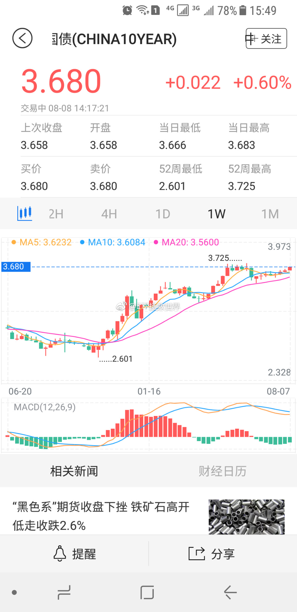

回复@iloveyounow:网易老板。曾经的中国首富。你看，低调到很多人都不认识。就喜欢低调的实力派！//@iloveyounow:回复@ETF拯救世界:他是做什麼的//@八大山债人:。。。。 //@钟鸿钧://@子柳:潘老板：我看到门口有人穿西装。 丁老板：那是保安。@网易新闻客户端:潘老板：你们平时上班都穿这样呀？丁老板：不然呢？
最喜欢丁磊。freestyle！用心做事！产品好！不吹NB！清流。//@八大山债人:。。。。 //@钟鸿钧://@子柳:潘老板：我看到门口有人穿西装。 丁老板：那是保安。@网易新闻客户端:潘老板：你们平时上班都穿这样呀？丁老板：不然呢？
有些朋友觉得我每天强调心态，强调收益率，强调坚定持有，每天说，说太多，都是废话。其实，可能是他不知道就是因为我这样，多少朋友的恒生才能坚定拿到50%+。多少朋友才能坚定持有各种盈利品种，才能面对下跌心态平和。有些事，其实并不那么简单。
回复@奥斯特洛夫大柴夫斯基:保守-激进，我的建议仓位是21-48//@奥斯特洛夫大柴夫斯基:现在50%的仓位，继续等，希望能加仓位到150%（个人根据E大做的个性化调整方案）。@ETF拯救世界:$159938 目前计划的第二大并列重仓基金。无论如何，不管发生什么，除非买的时候就是为了做波段，否则不要卖。不要卖。不要卖。说三遍。
回复@小韭菜V:想梭就梭，要梭的漂亮。//@小韭菜V:老大:我想梭哈!@ETF拯救世界:$159938 目前计划的第二大并列重仓基金。无论如何，不管发生什么，除非买的时候就是为了做波段，否则不要卖。不要卖。不要卖。说三遍。
说真的，科学这件事，不要说的太绝对。曾经人们认为地球、太阳是宇宙的中心。世界上没有什么不可能，只能说，以人类目前的科学水平，没有发现地震与地震云有关而已。面对这个世界，大家都应该敬畏和谦虚。@中国地震台网速报:云，和地震没有关联！！！
SO?@蓝鲸TMT网:【强生宣布HIV疫苗临床试验结果：志愿者100%产生抗体】强生公司宣布了全球首次HIV疫苗人体临床试验结果，这一多中心、随机、安慰剂对照、双盲的1/2a期临床试验招募了393位健康志愿者，志愿者来自美国、卢旺达、乌干达、南非和泰国，结果显示，志愿者对HIV疫苗耐受性良好，且100%产生了对抗HIV的抗体。
创业也好，养老也好，医药也好……最近这几个月我们大力买入的品种，都是为“未来”布局。什么是未来？未来不是明天，下周，下个月。而是明年，三年、五年、甚至十年后。为明天或者下周布局很简单，买强势就行。但我们不会，我们就买弱的。非常弱，特别弱，超弱的。即使这么弱，我们持仓也都是盈利的。你说吼不吼？那么，未来它们开始爆发的时候呢？
憋说话，用心去感受。医药长期低迷是不可能的。//@ETF拯救世界:回复@木木不哭木木:最爱。我最近几乎每天都在买，已经买到了总资产的5%。这对我来说已经是很不小的一个仓位了。再跌，就会进入低估区域。买入的力度会加大。//@木木不哭木木:医药最近在调整，挺好的，给我们慢慢买入的机会。@ETF拯救世界:$创业板指 sz399006$ 总是蠢蠢欲动。
回复@野狗菜:3%是债息。但是你要注意，债券的价格会变化的。所以2016年下半年买入债基的很多人现在都亏了不少，为什么，价格下跌了。同理，当价格上涨的时候，债息+价格收益，这个赚多少都有可能。710国开债08年涨11%；14年涨14%就是这个道理。@ETF拯救世界: 